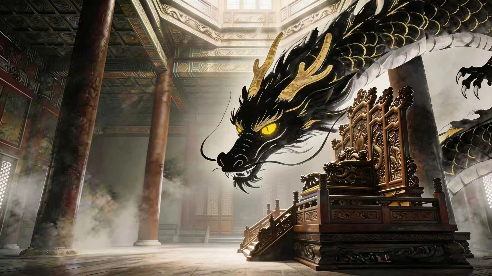
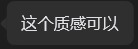
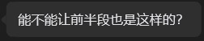

02 / COMMISSION · 闲鱼定制
把“水墨＋3D”，
变成可沟通的画面。
国风龙镜头定制修改 / 需求理解 · 视觉方案 · 动作控制

现有制作画面样例 / 最终交付视频与验收记录待补
THE BRIEF / 需求与职责
先拆开风格诉求，
再定视觉方向。
客户最初给出龙的文字描述，希望水墨风格与 3D 结合，具体画面尚未确定。我把需求理解为两个层面：国风奇幻氛围，以及龙的立体体积感。
我直接对接客户，准备风格参考、视觉方案、分镜与关键帧，测试生成方式，并负责动作修改、后期和交付。
01 / VISUAL DIRECTION
把模糊描述，变成选择题。
三种参考方向
筛选终末地游戏美术、粘土、纯 3D 三种风格参考，与客户确认后，以终末地游戏美术作为本次修改的风格参考。
文字与图像共同约束
让 GPT 根据效果图反推提示词，同时将效果图作为视觉参考，先生成风格图以确定方向。
再安排动作
画分镜草稿，标出每段起点、移动方向、落点和接镜位置，并把爪子数量一致列为生成要求。
以上为现有样图，未作为按时间排序的前后修改对比。风格确认、草稿与关键帧完整版本待补。
02 / MOTION & CONTINUITY
把运动轨迹，留在可控范围。
参考图生视频
把分镜草稿交给 Seedance 作为参考。试做时动作整体连贯，但部分结果偏离了预设轨迹。
首尾帧生成
按分镜生成关键帧，再以选定首尾帧生成片段。按我的试做观察，起止画面更容易控制，相邻片段衔接更顺。
生成后逐条检查爪子数量、运动轨迹和接镜，筛掉跑偏或穿帮版本，再调色、细化和交付。以上比较来自本人试做记录；两种方式的对照视频待补。
03 / FEEDBACK & DELIVERY
过程认可，有材料可核对。


聊天记录相关文字气泡裁图 / 已去除姓名、头像及无关界面。
客户在制作过程中认可质感，并希望前半段保持相同效果。这支持对修改中质感方向的认可。
最终验收待补。母资料库记载已完成调色、细化并交付；现有截图中的认可发生在修改过程中，不能据此替代最终验收。
时间、修改次数与来源说明
本人回忆订单为 2025 年，现有聊天只显示 4 月 9 日、4 月 11 日，未显示年份；简历接单起始时间为 2026 年 1 月，仍待订单记录核对。
三种风格方向、两种生成测试、共修改 7 次来自本人描述，完整改稿记录待补。组长审阅版的“最多 8 轮”不用于此单。
本页待补材料
订单年份、风格确认记录、完整草稿与关键帧、两种生成方式的试做视频、完整改稿记录、最终交付视频和验收记录。依据《个人母资料库》2026.11.17 定稿及闲鱼国风龙证据 01、04、06–08 整理。